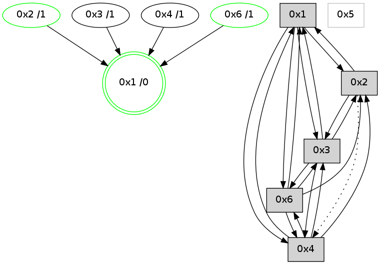

>> << IDX [start] -100 -25 -5 +0 +5 +25 [1200.26432109]
 Previous packets
----------------------------------------------------------------------
1195.241788 beacon01(adaf) #0 coord=01,02,05,03,04,06 cycle=944.0ms assoc
-- color-indic=0 64 de 85
1195.251748 beacon02(adaf) #0 coord=01,02,05,03,04,06 cycle=944.0ms assoc 64 8f 7a
1195.261749 beacon05(adaf) #0 coord=01,02,05,03,04,06 cycle=944.0ms assoc 64 29 50
1195.271749 beacon03(adaf) #0 coord=01,02,05,03,04,06 cycle=944.0ms assoc 64 b5 74
1195.281749 beacon04(adaf) #0 coord=01,02,05,03,04,06 cycle=944.0ms assoc 64 13 5e
1195.291750 beacon06(adaf) #0 coord=01,02,05,03,04,06 cycle=944.0ms assoc 64 67 42
1195.303472 [Hello(4): seq=970 sym=2,1,3,6 sysInfo=hasWarning stat=2:1,0,0,0/1:15,11,12,0/3:15,0,4,0/6:7,0,3,0]
----------------------------------------------------------------------
1196.246295 beacon01(adaf) #0 coord=01,02,05,03,04,06 cycle=944.0ms assoc
-- color-indic=0 64 92 35
1196.256256 beacon02(adaf) #0 coord=01,02,05,03,04,06 cycle=944.0ms assoc 64 c3 ca
1196.266256 beacon05(adaf) #0 coord=01,02,05,03,04,06 cycle=944.0ms assoc 64 65 e0
1196.276256 beacon03(adaf) #0 coord=01,02,05,03,04,06 cycle=944.0ms assoc 64 f9 c4
1196.286257 beacon04(adaf) #0 coord=01,02,05,03,04,06 cycle=944.0ms assoc 64 5f ee
1196.296257 beacon06(adaf) #0 coord=01,02,05,03,04,06 cycle=944.0ms assoc 64 2b f2
1196.307735 [Hello(1): seq=873 sym=2,4,6,3 color=0 sysInfo=hasWarning,MaxColorIndicationCalled,MaxColorResponseCalled,MaxColorRequestCalled,ColoringModeRequestCalled stat=2:2,3,5,0/4:3,0,0,0/6:4,2,10,0/3:1,0,2,0]
1196.311609 [Hello(3): seq=970 sym=6,2,1,4 color=2 sysInfo=hasWarning,MaxColorIndicationCalled,ColoringModeIndicationCalled,MaxColorResponseCalled stat=6:7,0,2,0/2:0,0,0,0/1:0,15,11,1/4:8,10,3,1]
----------------------------------------------------------------------
1197.250802 beacon01(adaf) #0 coord=01,02,05,03,04,06 cycle=944.0ms assoc
-- color-indic=0 64 56 5a
1197.260763 beacon02(adaf) #0 coord=01,02,05,03,04,06 cycle=944.0ms assoc 64 07 a5
1197.270764 beacon05(adaf) #0 coord=01,02,05,03,04,06 cycle=944.0ms assoc 64 a1 8f
1197.280765 beacon03(adaf) #0 coord=01,02,05,03,04,06 cycle=944.0ms assoc 64 3d ab
1197.290764 beacon04(adaf) #0 coord=01,02,05,03,04,06 cycle=944.0ms assoc 64 9b 81
1197.300764 beacon06(adaf) #0 coord=01,02,05,03,04,06 cycle=944.0ms assoc 64 ef 9d
1197.312480 [Hello(4): seq=971 sym=2,1,3,6 sysInfo=hasWarning stat=2:1,0,0,0/1:0,11,12,0/3:0,0,4,0/6:7,0,3,0]
----------------------------------------------------------------------
1198.255309 beacon01(adaf) #0 coord=01,02,05,03,04,06 cycle=944.0ms assoc
-- color-indic=0 64 1b 5d
1198.265271 beacon02(adaf) #0 coord=01,02,05,03,04,06 cycle=944.0ms assoc 64 4a a2
1198.275270 beacon05(adaf) #0 coord=01,02,05,03,04,06 cycle=944.0ms assoc 64 ec 88
1198.285270 beacon03(adaf) #0 coord=01,02,05,03,04,06 cycle=944.0ms assoc 64 70 ac
1198.295270 beacon04(adaf) #0 coord=01,02,05,03,04,06 cycle=944.0ms assoc 64 d6 86
1198.316983 [Hello(3): seq=971 sym=6,2,1,4 color=2 sysInfo=hasWarning,MaxColorIndicationCalled,ColoringModeIndicationCalled,MaxColorResponseCalled stat=6:8,0,2,0/2:0,0,0,0/1:0,15,11,1/4:8,10,3,1]
1198.320318 [Hello(1): seq=874 sym=2,4,6,3 color=0 sysInfo=hasWarning,MaxColorIndicationCalled,MaxColorResponseCalled,MaxColorRequestCalled,ColoringModeRequestCalled stat=2:3,3,5,0/4:3,0,0,0/6:4,2,10,0/3:2,0,2,0]
1198.323465 [STC(1) #0.214 new-neigh,tree-change,inconsistent-stability,stable,to-color d=0]
----------------------------------------------------------------------
1199.259812 beacon01(adaf) #0 coord=01,02,05,03,04,06 cycle=944.0ms assoc
-- color-indic=0 64 df 32
1199.269773 beacon02(adaf) #0 coord=01,02,05,03,04,06 cycle=944.0ms assoc 64 8e cd
1199.279774 beacon05(adaf) #0 coord=01,02,05,03,04,06 cycle=944.0ms assoc 64 28 e7
1199.289774 beacon03(adaf) #0 coord=01,02,05,03,04,06 cycle=944.0ms assoc 64 b4 c3
1199.309774 beacon06(adaf) #0 coord=01,02,05,03,04,06 cycle=944.0ms assoc 64 66 f5
1199.321327 [STC(3)->1 #0.214 new-neigh,tree-change,inconsistent-stability,to-color d=1]
1199.325353 [Hello(6): seq=887 sym=4,3,1,2 color=3 sysInfo=hasWarning,MaxColorIndicationCalled,ColoringModeIndicationCalled,MaxColorResponseCalled stat=4:9,5,7,1/3:4,0,1,0/1:14,13,8,0/2:0,0,0,0]
1199.327155 [Hello(2): seq=1459 sym=3,1 asym=4 color=13 sysInfo=hasWarning,MaxColorIndicationCalled,ColoringModeIndicationCalled,MaxColorResponseCalled stat=3:10,0,2,0/1:5,7,14,0/4:5,0,1,0]
1199.330236 [STC(2)->1 #0.214 new-neigh,tree-change,inconsistent-stability,stable,to-color d=1]
1199.334370 [STC(6)->1 #0.214 new-neigh,tree-change,inconsistent-stability,stable,to-color d=1]